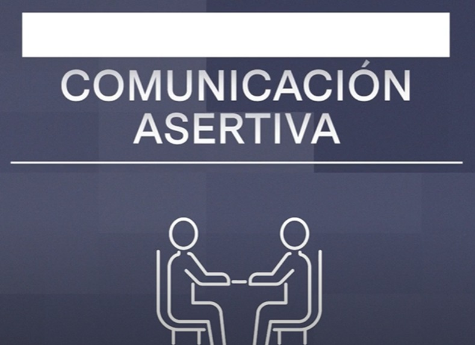

>
>
Descripción de la actividad
Participé en la creación de un programa de radio como parte de mi actividad de comunicaciones. Junto con mi equipo, planificamos cada detalle, desde el contenido hasta la música y los segmentos especiales. Realizamos entrevistas interesantes, discutimos temas relevantes y compartimos información útil para nuestra audiencia. Fue emocionante ver cómo cobraba vida nuestro programa en el aire, y nos esforzamos por brindar contenido de calidad y entretenimiento a nuestros oyentes. Esta experiencia me permitió desarrollar habilidades de comunicación y trabajo en equipo, además de brindarme una plataforma para expresar ideas y conectar con la audiencia a través del medio radiofónico.
